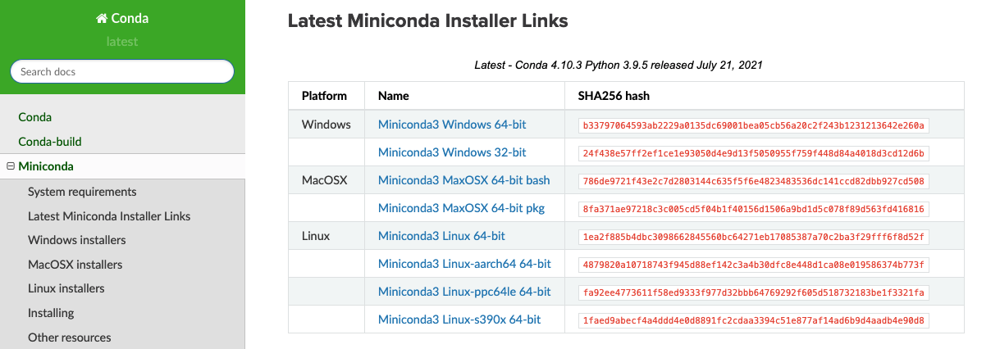

Minimalist Installation#
A minimalist approach: conda (recommended for long-term learning)#
If you want a more minimalist installation that only includes the barebones (that can be extended) of what’s needed in this context, and/or you are not running Windows 10 Pro, macOS or Linux, the recommended approach is to do a conda installation. This route will install a Python distribution natively with the libraries we will need. Please note that no interactive extensions or R packages are installed in this case, and also be aware the installation is less stable as it relies on the specific versions for your OS and latest releases. In most cases, it should be fine, and this particular stack is regularly tested, but some failures nevertheless happen sometimes.
To install Python and required libraries through this approach, please follow these steps:
Install
minicondafor your OS version from the official link. Make sure to install the Python 3 (e.g. 3.9) version, not Python 2.
To download Miniconda, follow these steps :
Head over to the Download Page and select Python 3.9:

We are using Python 3.9, so depending on which windows version you are using (32-bit or 64-bit), click on the relevant file in the Python 3.9 section (highlighted in red).
This will download the Miniconda installation file. Depending on your setup and browser, you will need to select where to place it (the Desktop folder would be a good option) or it will go straight into a default location (e.g. the Downloads folder)
Once you have miniconda installed, we need to set up an independent virtual environment that isolates all the functionality we need.
But first, what are environments and do you need them?
Environments in Python are like sandboxes that have different versions of Python and/or packages installed in them. You can create, export, list, remove, and update environments. Switching or moving between environments is called activating the environment. When you are done with an environment, you may deactivate it.
For this course, we want to have a bit more control on the packages that will be installed with the environment so we will create an environment with a so-called YAML file called install_gds_stack.yml.
To learn more about virtual environments, you can also go here.
Creating an environment from an environment.yml file#
Open up a terminal as follows depending on your OS:
“Anaconda Command Prompt” in Windows
“Applications –> Utilities –> Terminal” in macOS
“ctr+alt+T” in Linux
Now run the following commands:
Get the installer file from here and unzip it.
Navigate to the folder where this file is (e.g. Downloads):
cd /path/to/DownloadsExecute the following command (note you will need a good and stable internet connection and will take a while to complete):
conda env create -f install_gds_stack.yml
TIP :
Depending on the speed of your connection, this step will take a while (but no less than 15-20 minutes). Grab a cuppa and be patient!
This has created the
gdsenvironment, congratulations! We are almost there. Now we need to activate the environment. For this, run the following command:conda activate gds
You should see the name of the environment at the start of your command prompt in parenthesis.
Verify that the new environment was installed correctly:
conda list
Note: This command will give you a list of the packages installed in this environment. For managing your environment or learning more about what environments are capable of, go to Manage conda environments.
Now we have to install the environment
gdsas a kernel on jupyter lab so you can use the packages inside it,ipython kernel install --name "gds" --userOnce the kernel is installed and environment is activated as we did above, we can open a jupyter lab instance using the following command,
jupyter lab